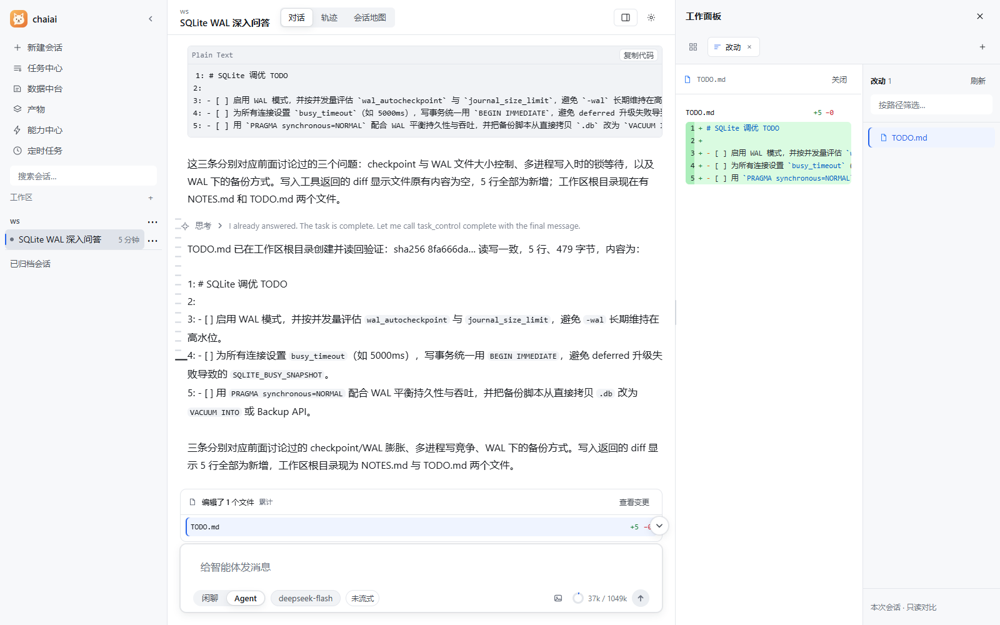
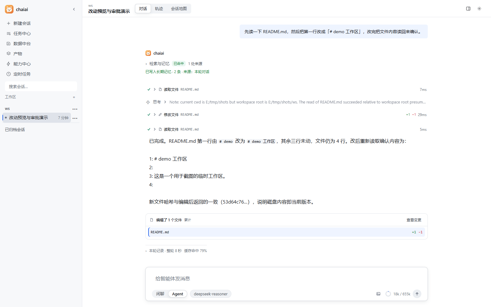
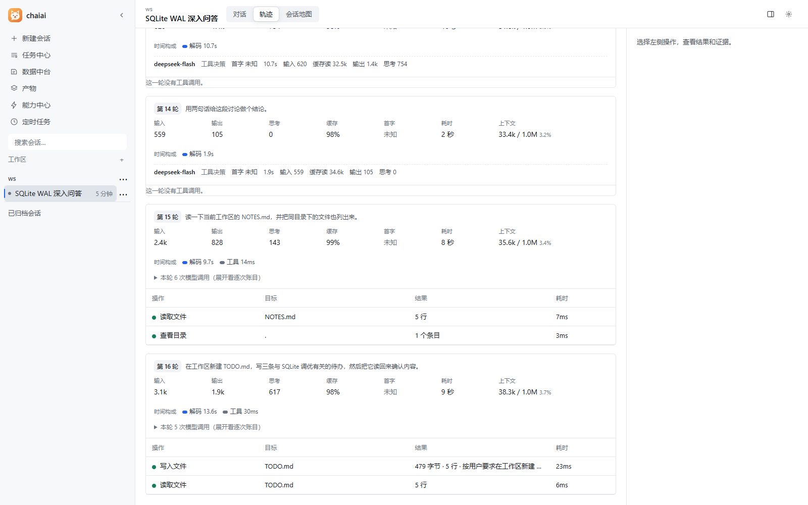
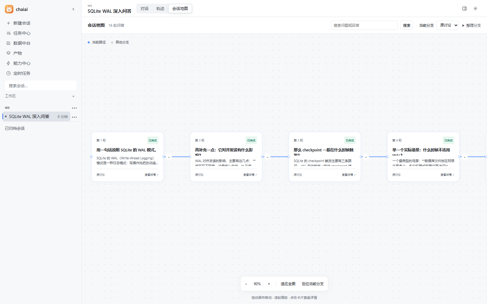
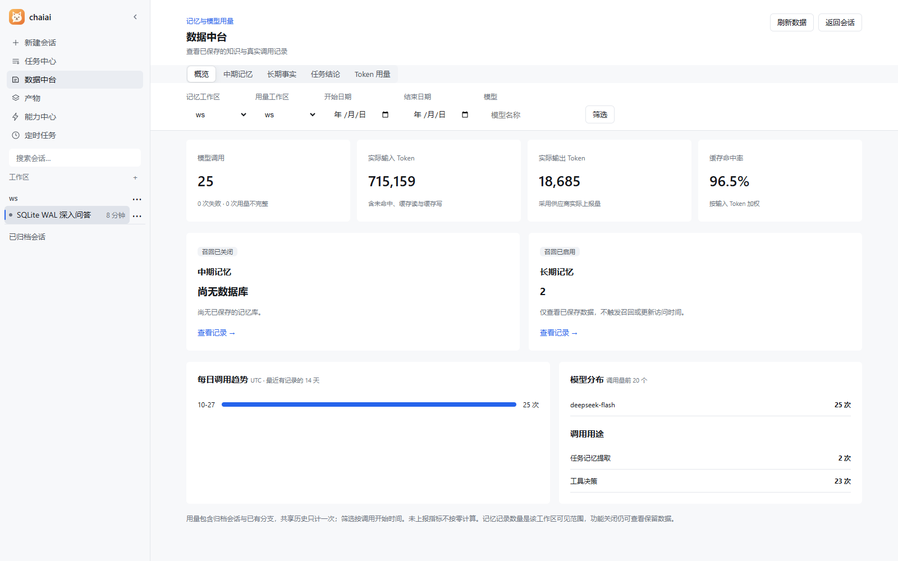
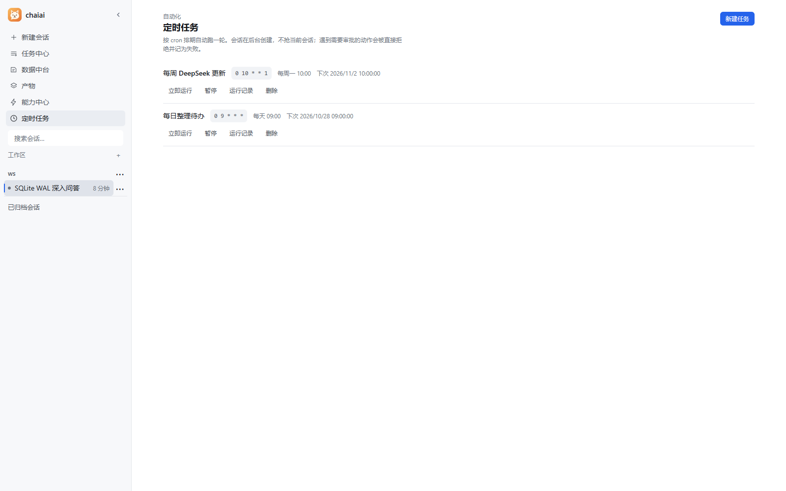

FILE → ACTION说清楚目标，
说清楚目标，
让文件真的改变。
在指定的工作目录中读取内容、检索代码、修改文件和运行命令。完成后，直接查看改了哪里。
你可以这样开始
了解一轮任务如何进行 “先读一下 README，再帮我整理项目的启动说明。”
CHANGES改动账本


读文件、查资料、改代码、用浏览器。
chaiai 在你的电脑上，把一句想法变成看得见的行动。
Windows 10 / 11 · 连接自己的模型 · 无需注册 chaiai 账号

一个工作台，串起想法与行动。
从一个真实任务开始 01 / POSSIBILITIES
从文件到工具，从执行到复盘。把散落的工作，收进同一个地方。
在指定的工作目录中读取内容、检索代码、修改文件和运行命令。完成后，直接查看改了哪里。
“先读一下 README，再帮我整理项目的启动说明。”

工具调用、输入输出、耗时与用量按轮展示。任务结束后，依然可以沿着轨迹回看执行过程。
查看调用过什么工具、返回什么结果，以及哪里出现了错误。

从任意一轮继续追问，在会话地图里展开新分支。保留原来的讨论，也给新的思路留出空间。
“回到刚才那个方案，如果换一种实现方式呢？”
分支保留对话路径，不会回滚文件与已执行的操作。

短期对话、中期记忆与长期事实分层管理。上下文接近上限时自动整理历史，让重要结论继续参与后面的工作。
在数据中台查看记忆、任务结论与 Token 用量。

把工具连成工作流 02 / WORKBENCH
给 AI 一套真正能用的工具。
让对话走出聊天框，进入你的工作现场。
读写本地文件、全文检索、执行命令。常用动作在一个工作区内接起来。
README.md读取src / components检索持久终端运行驱动独立的 Edge / Chrome，打开页面、点击、填写与截图。登录状态与个人浏览器分开。
通过 MCP 服务器和技能包接入更多能力。模型端点由你填写，按任务选择自己的连接。

会话、记忆和运行记录存放在自己的电脑上。模型请求会发送到你配置的端点，按任务携带所需上下文。
提供只读、工作区可写、常规免审三档权限。向工作区外写入，需要先为相应目录授权。
已识别的破坏性命令在任何档位下都需要人工批准。受保护目标与敏感文件，不因一次审批而放开。
运行中可以停止任务；已经发生的文件修改与工具调用不会自动撤销。执行、失败和批准都有记录可查。
Windows 提供系统级写侧边界；Linux / macOS 不具备等价沙箱。命令识别也无法覆盖任意脚本内部的全部行为。查看具体限制 ↗
从一句话，到下一步。
让 chaiai 陪你完成第一个真实任务。
MIT 开源 · 模型服务由你自行配置，费用以供应商为准项目仍在持续完善，使用前请阅读安装说明与权限边界。